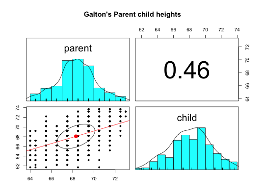
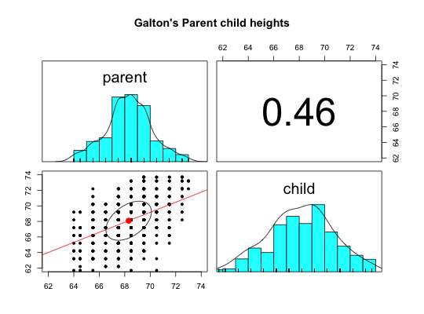

Two of the earliest examples of the correlation coefficient were Francis Galton's data sets on the relationship between mid parent and child height and the similarity of parent generation peas with child peas. This is the data set for the Galton height.
data(galton)
A data frame with 928 observations on the following 2 variables.
parentMid Parent heights (in inches)
childChild Height
Female heights were adjusted by 1.08 to compensate for sex differences. (This was done in the original data set)
This is just the galton data set from UsingR, slightly rearranged.
Stigler, S. M. (1999). Statistics on the Table: The History of Statistical Concepts and Methods. Harvard University Press. Galton, F. (1886). Regression towards mediocrity in hereditary stature. Journal of the Anthropological Institute of Great Britain and Ireland, 15:246-263. Galton, F. (1869). Hereditary Genius: An Inquiry into its Laws and Consequences. London: Macmillan. Wachsmuth, A.W., Wilkinson L., Dallal G.E. (2003). Galton's bend: A previously undiscovered nonlinearity in Galton's family stature regression data. The American Statistician, 57, 190-192.
The other Galton data sets: heights, peas,cubits
#> vars n mean sd median trimmed mad min max range skew kurtosis #> parent 1 928 68.31 1.79 68.5 68.32 1.48 64.0 73.0 9 -0.04 0.05 #> child 2 928 68.09 2.52 68.2 68.12 2.97 61.7 73.7 12 -0.09 -0.35 #> se #> parent 0.06 #> child 0.08#but this makes the regression lines look the same pairs.panels(galton,lm=TRUE,main="Galton's Parent child heights")#better is to scale them pairs.panels(galton,lm=TRUE,xlim=c(62,74),ylim=c(62,74),main="Galton's Parent child heights")